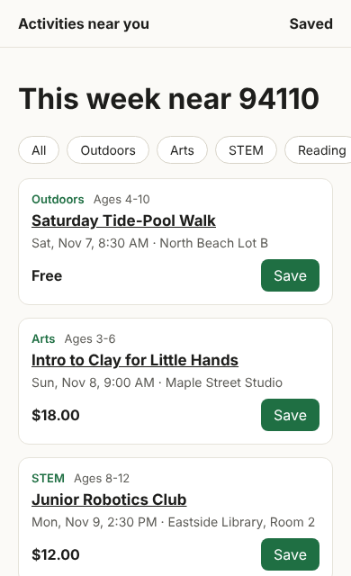
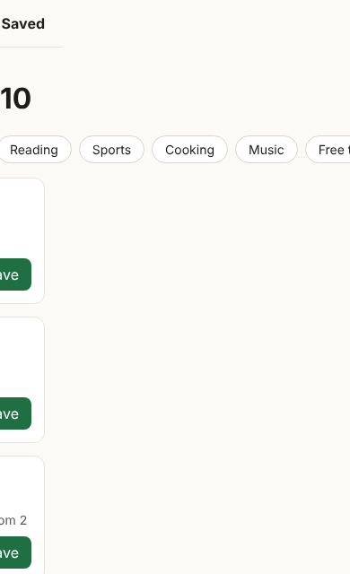
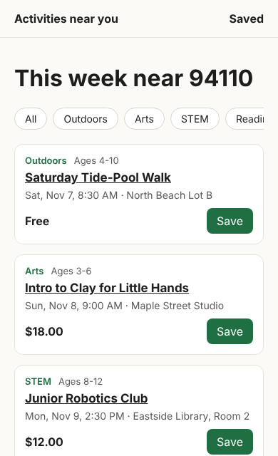

<!doctype html><html lang="en"><head><meta charset="utf-8"><meta name="robots" content="noindex, nofollow"><title>Pre-Launch Review Sample (PDF)</title>
<style>
@page { size: Letter; margin: 0; }
* { box-sizing: border-box; } body { margin: 0; font: 12.5px/1.45 system-ui, -apple-system, "Segoe UI", sans-serif; color: #1c1b18; background: #fff; }
.sheet { width: 8.5in; height: 11in; padding: .45in .5in; position: relative; overflow: hidden; break-after: page; }
.sheet:last-child { break-after: auto; }
.eyebrow { font-size: 10.5px; color: #55534c; } h1 { font-size: 26px; margin: 4px 0 6px; letter-spacing: -.02em; } h2 { font-size: 15px; margin: 14px 0 6px; }
.lede { font-size: 14px; margin: 0 0 8px; } .disc { border-left: 3px solid #1f6f43; background: #e6f1ea; padding: 6px 10px; font-size: 11px; border-radius: 0 6px 6px 0; }
.lanes { display: grid; grid-template-columns: repeat(3, 1fr); gap: 8px; margin: 10px 0; }
.lane { border: 1px solid #e4e0d4; border-top-width: 4px; border-radius: 8px; padding: 8px 10px; } .lane b { font-size: 22px; display: block; }
.P0 { border-top-color: #c53030; } .P1 { border-top-color: #a8610a; } .P2 { border-top-color: #55534c; }
.k { font-size: 11px; font-weight: 700; } .kP0 { color: #c53030; } .kP1 { color: #a8610a; } .kP2 { color: #55534c; }
table { width: 100%; border-collapse: collapse; font-size: 11px; line-height: 1.35; } th { text-align: left; color: #55534c; font-weight: 600; border-bottom: 1px solid #8a877e; padding: 4px 6px; }
td { border-bottom: 1px solid #e4e0d4; padding: 3.5px 6px; vertical-align: top; } .num { text-align: right; white-space: nowrap; } .small { color: #55534c; font-size: 10.5px; }
.phones { display: grid; grid-template-columns: repeat(4, 1fr); gap: 8px; } .phones img { width: 100%; border: 1px solid #e4e0d4; border-radius: 10px; } .cap { font-size: 10px; color: #55534c; }
.three { display: grid; grid-template-columns: repeat(3, 1fr); gap: 8px; } .box { border: 1px solid #e4e0d4; border-radius: 8px; padding: 8px 10px; } .big { font-size: 20px; font-weight: 700; }
.two { display: grid; grid-template-columns: 1fr 1fr; gap: 10px; } ul { margin: 4px 0 0; padding-left: 16px; } li { margin: 2px 0; }
.foot { position: absolute; left: .5in; right: .5in; bottom: .3in; font-size: 9.5px; color: #55534c; border-top: 1px solid #e4e0d4; padding-top: 5px; display: flex; justify-content: space-between; }
</style></head><body>
<section class="sheet" id="p1"></section><section class="sheet" id="p2"></section>
<script src="data.js"></script>
<script>
const R = window.REVIEW, $ = s => document.querySelector(s), m = n => '$' + Math.round(n).toLocaleString('en-US');
const T = Object.fromEntries(R.totals.map(t => [t.sev, t])); const G = { P0: '▲', P1: '◆', P2: '●' };
const L = { P0: 'Fix before inviting anyone', P1: 'Fix before public launch', P2: 'Fix in the first month' };
const tot = R.totals.reduce((a, t) => a + t.hours, 0), cost = R.totals.reduce((a, t) => a + t.cost, 0);
const foot = n => `<div class="foot"><span>Sample pre-launch review · demo Next.js ${R.versions.next} + Supabase app built for this sample, problems planted on purpose · not PlayLoop's code</span><span>${n} / 2</span></div>`;
$('#p1').innerHTML = `<div class="eyebrow">Sample pre-launch review · prepared for PlayLoop</div><h1>Is this app safe to show real parents?</h1>
<p class="lede">Short answer: not yet. ${T.P0.n} problems should be fixed before any real parent signs up, about ${T.P0.hours} hours of work. None needs a rebuild.</p>
<div class="disc">This is a demo app I built for this sample, with problems planted on purpose. Every number was measured on the demo by the scripts that ship with it.</div>
<div class="lanes">${['P0','P1','P2'].map(s => `<div class="lane ${s}"><span class="k k${s}">${G[s]} ${L[s]}</span><b>${T[s].n}</b><span class="small">${T[s].hours} h · about ${m(T[s].cost)} at $${R.rate}/h</span></div>`).join('')}</div>
<h2>What to fix, in order</h2>
<table><thead><tr><th></th><th>Problem, in plain English</th><th>Fix</th><th class="num">Hours</th><th class="num">Cost</th></tr></thead><tbody>
${R.findings.map(f => `<tr><td class="k k${f.sev}">${G[f.sev]} ${f.sev}</td><td><b>${f.title}</b><div class="small">${f.risk}</div></td><td class="small">${f.fix}</td><td class="num">${f.hours}</td><td class="num">${m(f.cost)}</td></tr>`).join('')}
<tr><td></td><td><b>Total</b></td><td></td><td class="num"><b>${tot}</b></td><td class="num"><b>${m(cost)}</b></td></tr></tbody></table>
${foot(1)}`;
$('#p2').innerHTML = `<h2 style="margin-top:0">What a parent sees on a phone (390 px, production build)</h2>
<div class="phones"><div><div class="cap"><b>Before</b>: looks fine</div></div><div><div class="cap"><b>Before, swiped</b>: page slides ${R.runtime.before.swipe_scroll_x}px</div></div>
<div><div class="cap"><b>After</b>: chips scroll on their own</div></div><div><div class="cap"><b>After, swiped</b>: page moves ${R.runtime.after.swipe_scroll_x}px</div></div></div>
<h2>How each finding was checked</h2><div class="three">
<div class="box"><b>Schema and code scan</b><div class="big">${R.scan.before.P0 + R.scan.before.P1 + R.scan.before.P2} → ${R.scan.after.P0 + R.scan.after.P1 + R.scan.after.P2}</div><div class="small">scanner flags before → after · ${R.tests.pass}/${R.tests.tests} scanner tests pass</div></div>
<div class="box"><b>Build check, marker keys</b><div class="big">${R.bundle.before.service_key.files_containing} → ${R.bundle.after.service_key.files_containing}</div><div class="small">browser files holding the admin key, of ${R.bundle.files}</div></div>
<div class="box"><b>Real browser</b><div class="big">${R.runtime.before.overflow.filter(o => o.overflows).length} → ${R.runtime.after.overflow.filter(o => o.overflows).length}</div><div class="small">layouts that slide sideways · signed-out /saved: ${R.runtime.before.guard.status} → ${R.runtime.after.guard.status}</div></div></div>
<p class="small"><b>Already right:</b> activity listings and reviews are public on purpose and hold no personal data; organizers can change only their own listings; organizer contact details are locked.</p>
<p class="small">All checks are defensive: they read the code, the build output and pages in a browser. Nothing is run against a live system. Finding F9 came from reading the schema, not from a tool.</p>
<h2>The PlayLoop review</h2><div class="two"><div class="box"><b>Included</b><ul><li>Architecture read-through</li><li>Sign-up, sign-in, sessions, private pages</li><li>Every table's access rules vs who should see what</li><li>Keys and env variables, including what reaches the browser</li><li>Server routes and actions: who can call, what they accept</li><li>Core features by hand on phone and desktop</li><li>Bugs and technical debt worth fixing before launch</li><li>Plain-English report with priorities and per-item costs</li><li>30-minute walkthrough call</li></ul></div>
<div class="box"><b>Not included</b><ul><li>Making the fixes (quoted per item)</li><li>A rebuild or long-term contract</li><li>Penetration or load testing of a live system</li><li>Legal or privacy-law advice</li><li>Design or copy changes</li></ul><div class="big" style="margin-top:12px">$480 fixed</div><div class="small">3 business days from access. Read-only access is enough. Code, accounts and report stay yours.</div></div></div>${foot(2)}`;
</script></body></html>
